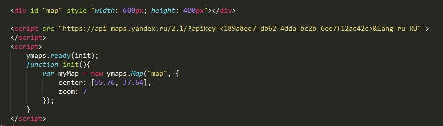

Рассмотрим код
Сначала объявляем блок div с идентификатором id="map" и с заданными высотой и шириной.
Затем надо подключить функцию API
Код функции:
<script src="https://api-maps.yandex.ru/2.1/?apikey=<189a8ee7-db62-4dda-bc2b-6ee7f12ac42c>&lang=ru_RU" > </script>
После этого добавляем скрипт с функцией init которая будет передавать нашему блоку с id="map" карты
У функции есть два параметра: center (координаты карты) и zoom (степень приближения)